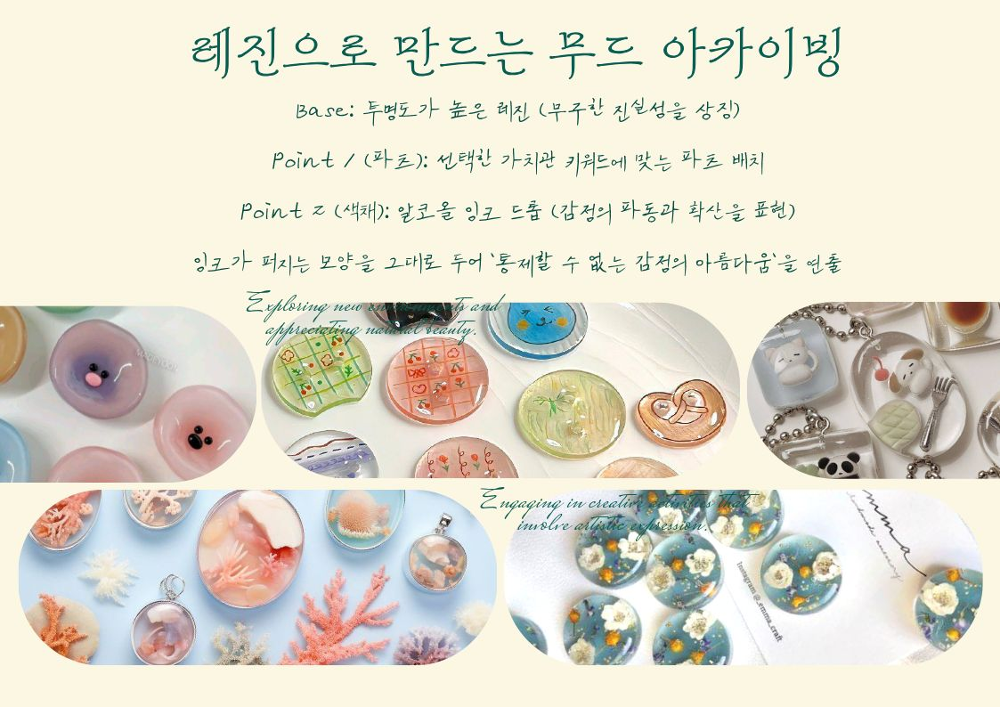

Step 1
내면의 키워드 추출
가장 먼저 당신의 마음을 들여다보는 시간을 가집니다. 현재의 나를 정의하는 세 단어가 모여 작품의 전체적인 분위기를 결정합니다.
나를 설명하는 단어 : word 1, word 2
머물고 싶은 감정 : your mood temperature
머물고 싶은 감정 : your mood temperature

Step 2
시각적 언어로의 번역
추상적인 감정을 구체적인 소재로 옮기는 단계입니다. 꽃의 꽃말과 색채의 심리를 통해 당신의 가치관을 시각화합니다.
Main Flower : 리시안셔스(변치 않는 신뢰)
Sub Color : Deep Blue(깊은 안정)
Sub Color : Deep Blue(깊은 안정)

Step 3
작품의 이름 짓기
완성된 오브제에 고유한 이름을 부여합니다. 이 이름은 공간에 놓인 작품을 마주할 때마다 당신이 기억해야 할 소중한 선언이 됩니다.
작품명 : 「 Title of Your Truth 」